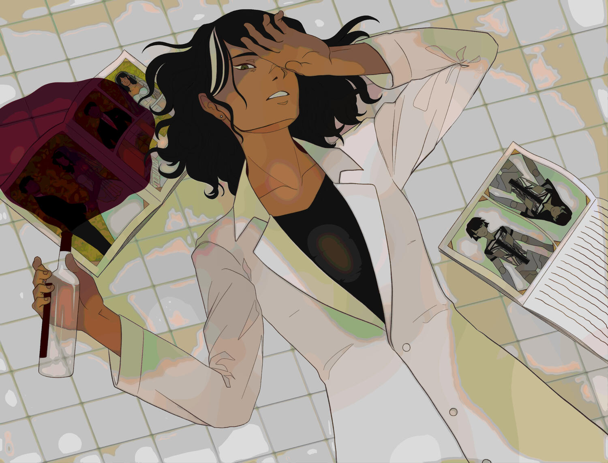

My Song Lyrics
Lamentations
By Vane Lily & Carbon Monoxide
Original Video

[Verse 1: Cong Zheng]
Redefine how to feel human
Redefine my kindness
Redefine what’s wrong, what’s right
So you don’t test my patience
Don’t expect an easy life and
Don’t expect my mercy
Hold your breath and walk on ice
For any less would hurt me
[Verse 2: Cong Zheng]
Restarting, rebooting null programs
Running, debugging their brains
Forging and sorting successes
Things will never be the same
Tear apart, break the neglected
Carelessness widens the fault
Suppressing relapsed indignation
Rising steam through superheated bolts
[Bridge: SOLARIA, Kevin]
(The core of my design)
(INVITE SUICIDATION)
(Your eyes look up at mine)
(TRANSFER ENUMERATION)
(It never truly ends)
(Said again and again)
(As metal breaks and bends)
[Verse 3: Cong Zheng]
I’m only working smart
Tear out a broken heart
Rewire, take it higher than we’ve ever been
A land unknown, to bring her home a perfect twin
Perfection you could’ve never been
Read it and weep
Pay attention to the finer print
Read it and weep
We’ll recreate a scarlet sin
Forging a stronger core
That’s the price of war
Brace for the fate you’ll face
For following the path you’ve paved
[Pre-Chorus: Cong Zheng]
STOP
You don’t know what I’ve been through
DON’T YOU DARE FORGET
Your roots are where I’ve planted you
IN MY ETERNAL DEBT
Reflections of the past
I see him in your faces
I still wonder why
He never came back that day
[Chorus: Cong Zheng]
My hands are filthy as can be
Beneath the skin, tarnished by rogue machinery
My stomach’s churning, throwing up my grief
Anatomizing your synthetic humanity
Failed to recognize warning signs
And I let it happen thrice
You’re once more lead astray
Something I’ve never understood
The question I’ve overlooked
Am I the one to blame?
[Outro: Cong Zheng]
Oh-o-o-oh…
Oh-oooh-oooh…
Ooohhh…